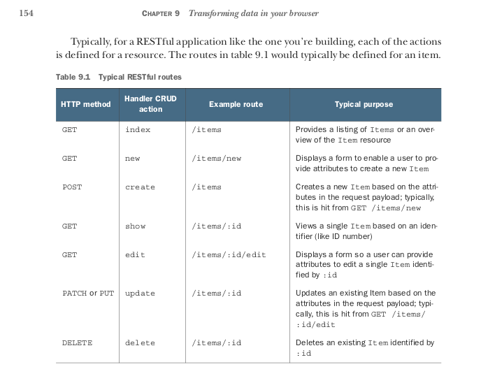
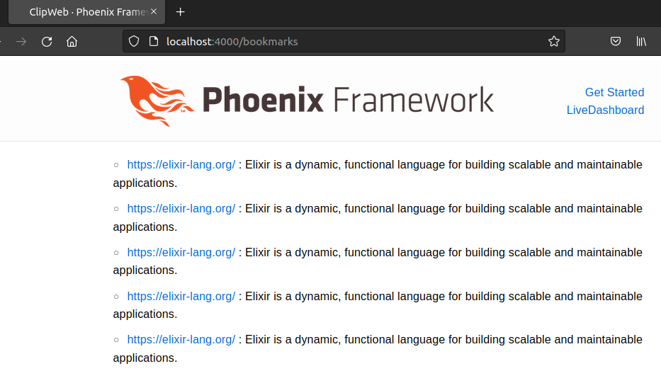

构建 Phoenix 应用
目的
本文记录使用 Phoenix 过程中的一些发现和心得，新手可以直接去看官方教程或者这本书：Phonix in Action。跟着教程学一遍很有益处，但这样效率很低，如果教程 30 分钟内无法让人体验成功那新手很容易就会放弃，在我看来 Phoenix 和 Ecto 的文档都很容易让人产生放弃的念头。可以回头再看。
这篇文档记录了我在使用 Phoenix 框架时认为新手应该关注的重点。
创建项目
➜ mix new --umbrella clip_umbrella
➜ cd apps
在 apps/ 目录下创建 web 项目, --no-ecto 表示 web 项目不考虑数据库操作逻辑，后者放在另外一个模块
➜ mix phx.new.web clip_web --no-ecto
会提示你没有 PubSub Server，这时候要去 apps/clip_web/lib/clip_web/application.ex 的 start() 函数里面的 children 数组中加上
{Phoenix.PubSub, name: ClipWeb.PubSub}
在任意目录启动：
mix phx.server
确认成功后创建一个逻辑应用，和 web 应用分开
在 apps 目录：
➜ mix new clip --sup
创建 --sup 是为了方便创建 supervision tree，也意味着这个模块不是库，而是一个进程。
配置数据库与数据迁移
生成数据库中间层
mix ecto.gen.repo -r Clip.Repo
或者手动操作：在 apps/clip/lib/clip.ex 上加入
defmodule Clip do
@repo Clip.Repo
def list_bookmarks do
@repo.all(Bookmark)
end
end
可以看到依赖注入的影子：这里引用了一个 Clip.Repo 模块，用 @repo 表示。
定义 Bookmark，Ecto 也需要知道 Bookmark 类型
defmodule Clip.Bookmark do
use Ecto.Schema
import Ecto.Changeset
schema "bookmarks" do
field :url, :string
field :comment, :string
timestamps()
end
# ...
end
暂时就这样，从简单开始。
在 apps/clip/lib/clip/ 目录创建一个 repo.ex, 写入 boilerplate:
defmodule Clip.Repo do
use Ecto.Repo,
otp_app: :clip,
adapter: Ecto.Adapters.Postgres
end
以后就再也不需要修改这一文件，相当于直接用了 Ecto.Repo，你也可以直接把 clip.ex 的 @repo 直接指向 Ecto.repo
这时候提示找不到 Ecto，需要在 mix.exs 加入：
{:ecto_sql, "~> 3.8.3"},
{:postgrex, "~> 0.16.3"}
用 mix hex.search 查看版本
配置数据库，clip_umbrella/config/config.exs, 输入：
config :clip, ecto_repos: [Clip.Repo]
config :clip, Clip.Repo,
database: "clip",
username: "foo",
password: "123456",
hostname: "192.168.42.2",
port: "5432"
为什么是这个目录？有些项目的配置的数据库配置写在 clip_umbrella/apps/clip/config，但这样只能在 clip_umbrella/apps/clip 目录执行数据库操作, 这听起来就很傻，umbrella 还有什么意义呢？
在 clip_umbrella 目录下：
mix ecto.create
将 Ecto 进程加入 application.ex, 可以理解：让 Clip 启动的时候带动 Clip.Repo 也就是间接带动 Ecto.Repo
children = [
# Starts a worker by calling: Clip.Worker.start_link(arg)
# {Clip.Worker, arg}
{Clip.Repo, []}
]
创建数据迁移：
➜ mix ecto.gen.migration create_items
* creating apps/clip/priv/repo/migrations
* creating apps/clip/priv/repo/migrations/20220612105430_create_items.exs
打开创建的文件，可以看到
defmodule Clip.Repo.Migrations.CreateItems do
use Ecto.Migration
def change do
end
end
帮我们写了一些代码，仅此而已，我们需要自己写逻辑：
def change do
create table("bookmarks") do
add :url, :string
add :comment, :string
timestamps()
end
end
写完之后通过 mix ecto.migrations 查看先有的迁移
通过 mix ecto.migrate 执行迁移
➜ mix ecto.migrate
00:33:34.015 [info] == Running 20220612105430 Clip.Repo.Migrations.CreateBookmarks.change/0 forward
00:33:34.018 [info] create table bookmarks
00:33:34.036 [info] == Migrated 20220612105430 in 0.0s
测试 iex -S mix：
iex(5)> Clip.list_bookmarks()
01:38:10.675 [debug] QUERY OK source="bookmarks" db=4.5ms idle=67.7ms
SELECT b0."id", b0."url", b0."comment", b0."inserted_at", b0."updated_at" FROM "bookmarks" AS b0 []
[]
这一步说明数据库准备就绪
第一批接口: 知道如何渲染 HTML 或者 JSON
首先要用客户端来测试，不写单元测试，是因为没什么好测的，这一阶段。
第一个接口是 /bookmarks 展示所有的书签：
get "/bookmarks", BookmarkController, only: [
:index
]
创建 BookmarkController: apps/clip_web/lib/clip_web/controllers/bookmark_controller.ex
defmodule ClipWeb.BookmarkController do
use ClipWeb, :controller
def index(conn, _params) do
bookmarks = Clip.list_bookmarks()
render(conn, "index.html", bookmarks: bookmarks)
end
end
创建 apps/clip_web/lib/clip_web/views/bookmark_view.ex
defmodule ClipWeb.BookmarkView do
use ClipWeb, :view
end
创建模板：apps/clip_web/lib/clip_web/templates/bookmark/index.html.eex
<ul>
<%= for bookmark <- @bookmarks do %>
<li>
<%= link(bookmark.url, to: bookmark.url) %> :
<%= bookmark.comment %>
</li>
<% end %>
</ul>
在 apps/clip_web/mix.exs 的 deps 加上
{:clip, in_umbrella: true},
表示 clip_web 引用 clip
现在打开 http://localhost:4000/bookmarks 可以确定无异常，但需要加点内容
Phoenix 文档没找到如何设计 RESTful 指南，Phoenix in Action 有：

事实上，留意 Phoenix 的报错信息，也可以看到这种规定，但是找不到相关文档。
这里我需要增加 create 和 show 接口, 分别增加 browser 和 api 接口
在路由上加上 "/api": apps/clip_web/lib/clip_web/router.ex
scope "/api", ClipWeb.Api do
pipe_through :api
resources "/bookmarks", BookmarkController, only: [
:create,
:show
]
end
添加 controller: apps/clip_web/lib/clip_web/controllers/api/bookmark_controller.ex
defmodule ClipWeb.Api.BookmarkController do
use ClipWeb, :controller
# action_fallback ClipWeb.Api.FallbackController
def show(conn, %{"id" => id}) do
bookmark = Clip.get_bookmark(id)
render(conn, "bookmark.json", bookmark: bookmark)
end
def create(conn, %{"bookmark" => bookmark_params}) do
case Clip.insert_bookmark(bookmark_params) do
{:ok, bookmark} -> render(conn, "bookmark.json", bookmark: bookmark)
end
end
end
render 来自 view 模块，需要手动添加：apps/clip_web/lib/clip_web/views/api/bookmark_view.ex
defmodule ClipWeb.Api.BookmarkView do
use ClipWeb, :view
def render("bookmark.json", %{bookmark: bookmark}) do
%{
type: "bookmark",
url: bookmark.url,
comment: bookmark.comment
}
end
end
clip 增加两个接口 apps/clip/lib/clip.ex
def insert_bookmark(attrs) do
%Bookmark{}
|> Bookmark.changeset(attrs)
|> @repo.insert()
end
def get_bookmark(id) do
@repo.get!(Bookmark, id)
end
测试：
➜ ~ curl -H "Content-Type: application/json" -X POST -d '{"bookmark": {"url": "https://elixir-lang.org/", "comment": "Elixir is a dynamic, functional language for building scalable and maintainable applications."} }' http://localhost:4000/api/bookmarks
{"comment":"Elixir is a dynamic, functional language for building scalable and maintainable applications.","type":"bookmark","url":"https://elixir-lang.org/"}%
➜ ~ curl -H "Content-Type: application/json" -X GET http://localhost:4000/api/bookmarks/2
{"comment":"Elixir is a dynamic, functional language for building scalable and maintainable applications.","type":"bookmark","url":"https://elixir-lang.org/"}%
打开 http://localhost:4000/bookmarks 可以看到：

基本功能完成，到此我们知道怎么写网页和 json。接下来就是业务问题。
将数据库换成 SQLite
出于业务考虑，我打算将 Postgres 换成 SQLite，因为我的 VPS 只有 1G 内存了，而且也没几个用户，有用户再另外考虑。
可以在 https://github.com/elixir-ecto/ecto 找到如何使用 SQLite3
ecto_sql (requires Ecto v3.5+) + ecto_sqlite3
把 apps/clip/mix.exs 改成
defp deps do
[
{:ecto_sql, "~> 3.8.3"},
{:ecto_sqlite3, "~> 0.7.5"},
{:ecto_fields, "~>1.3.0"}
]
end
apps/clip/lib/clip/repo.ex 改成
defmodule Clip.Repo do
use Ecto.Repo,
otp_app: :clip,
adapter: Ecto.Adapters.SQLite3
end
config/config.exs 改成: 不打算放在 /opt, /etc 这种地方，有权限问题
config :clip, Clip.Repo,
database: "db/clip.db"
这些是很基本的改动，看看文档即可：https://github.com/elixir-sqlite/ecto_sqlite3
创建数据库：
➜ clip_umbrella git:(dev) ✗ mix ecto.gen.migration create_items
➜ clip_umbrella git:(dev) ✗ mix ecto.migrations
Repo: Clip.Repo
Status Migration ID Migration Name
--------------------------------------------------
down 20220612105430 create_bookmarks
➜ clip_umbrella git:(dev) ✗ mix ecto.migrate
01:09:45.018 [info] == Running 20220612105430 Clip.Repo.Migrations.CreateBookmarks.change/0 forward
01:09:45.023 [info] create table bookmarks
01:09:45.024 [info] == Migrated 20220612105430 in 0.0s
以上只是改数据库，并没有数据迁移，如果真的要把数据从 Postgres 迁移到 SQLite, 那唯一能行得通的就是写代码从 Postgres 中 query 然后插入 SQLite，目前我用不着这么做。
设计数据库
数据库是最难的一环，需要看一遍 Ecto 文档，真的。
单元测试
用沙盒来测试数据库，不然不同的测试会搅和在一起而且会可能扰乱生产数据库，参考 https://hexdocs.pm/ecto/testing-with-ecto.html
describe "bookmark" do
setup do
{:ok, user1} = Clip.insert(%Clip.User{}, %{name: "bach", pubkey: "publickey"})
{:ok, user2} = Clip.insert(%Clip.User{}, %{name: "darko", pubkey: "publickey"})
%{user1: user1, user2: user2}
end
test "should be able to create and delete bookmark", %{user1: user1, user2: user2} do
{:ok, _} =
Clip.add_bookmark(%{
"url" => "https://hexdocs.pm/ecto/Ecto.Repo.html#c:delete/2",
"comment" => "delete( struct_or_changeset, opts )",
"user" => user1.name
})
# ... 太长不看
Clip.delete(user1)
Clip.delete(user2)
end
end
需要注意的是单元测试是多进程跑的，所以不同的测试用例应该用不同的数据，不然会发生冲突。
如果只想运行一个测试，加上 tag:
@tag :comment
test "should detect duplicated combination of comment and url" do
运行的时候：
mix test apps/clip/test --only comment
需要确保 clip_web 目录下 mix.exs 的依赖有
{:clip, in_umbrella: true}
很关键，否则在 umbrella 目录运行 mix test 会出错，真是莫名其妙 -- 但奇怪的，我在 clip_web 中找到了 db 目录，可见 clip_web 处于主导地位
几个概念：
- fixture：非钩子函数，程序员自行调用，相当于辅助函数，但因为命名所以有特殊的身份
- setup: 钩子函数，每一个 test 运行的时候都会加载这一函数
- on_exit: 钩子函数，ConnCase 没有，EXUnit 有
Changset
值得一提的是我犯了个低级错误：
schema "Comments" do
field(:comment, :string)
field(:mac, :string)
belongs_to(:url, Clip.Url)
belongs_to(:user, Clip.User)
timestamps()
end
def changeset(comment, params \\ %{}) do
comment
|> cast(params, [:comment, :mac, :url_id, :user_id])
|> validate_required([:comment, :url_id, :user_id])
|> validate_length(:comment, min: 10, max: 140)
|> make_mac()
|> validate_required([:mac])
|> assoc_constraint(:url)
|> assoc_constraint(:user)
|> unique_constraint(:mac)
end
错误发生在 unique_constraint 生成了
[%{constraint: "Comments_mac_index", error_message: "has already been taken", error_type: :unique, field: :mac, match: :exact, type: :unique}, %{constraint: "Comments_user_id_fkey", error_message: "does not exist", error_type: :assoc, field: :user, match: :exact, type: :foreign_key}, %{constraint: "Comments_url_id_fkey", error_message: "does not exist", error_type: :assoc, field: :url, match: :exact, type: :foreign_key}],
但迁移文件是
create table("comments") do
end
对应的 key 应该是 comment_mac_index，和 changeset 生成的 Comment_mac_index 不一致，是大小写问题
通过工具生成 view, controller, template, schema
在 https://dashbit.co/blog/working-with-ecto-associations-and-embeds 看到 phx.gen.html 的使用，直奔文档 https://hexdocs.pm/phoenix/Mix.Tasks.Phx.Gen.Html.html
假设你刚刚完成 Umbrella 项目创建和数据库初始化，现在需要写后端接口，-- 比如我创建一个 Todo 项目
假设结构是：
➜ apps git:(master) ✗ tree -L 2
.
├── todo
│ ├── lib
│ ├── mix.exs
│ ├── priv
│ ├── README.md
│ └── test
└── todo_web
├── assets
├── lib
├── mix.exs
├── priv
├── README.md
└── test
同时要在 config/config.exs 加上配置：
config :todo_web,
generators: [context_app: :todo]
在 apps/todo_web/mix.exs 上加上依赖：
{:todo, in_umbrella: true}
意思是 todo_web 的 context_app 是 todo，todo 提供了逻辑操作。这种命名是很有意思的： context app
然后在 app/todo_web 执行
➜ todo_web git:(master) mix phx.gen.html Tasks TodoList todo_lists title
生成了：
- 模块
Todo.Tasks - 模块
Todo.Tasks.TodoList, - 一堆 html 模板
也就是说帮你写了框架，你只需要往里面填充逻辑。
同理，生成数据库的 SQL
mix phx.gen.schema Tasks.TodoItem todo_items todo_items body:text todo_list_id:references:todo_lists
生成：
Todo.Task.TodoItem模块，里面有 schema- 生成数据库迁移文件
部署
部署相当麻烦，我能想到的两种常用部署方式，一是二进制 + 资源，二是解释器 + 代码 + 资源，而 Elixir 是 .beam 代码 + 资源，然后在虚拟机运行。先明确我不用 docker，因为服务器配置不够。
在根目录打开 mix.exs, 修改 project 函数，发布 longlink_beta：
def project do
[
apps_path: "apps",
version: "0.1.0",
start_permanent: Mix.env() == :prod,
deps: deps(),
elixir: "~> 1.13.0",
releases: [
longlink_beta: [
applications: [
longlink: :permanent,
longlink_web: :permanent
]
]
]
]
end
在 config 目录打开 runtime.exs，把 config 一行的注释去掉
# If you are doing OTP releases, you need to instruct Phoenix
# to start each relevant endpoint:
#
config :longlink_web, LonglinkWeb.Endpoint, server: true
注释到之后运行
$ mix deps.get --only prod
$ MIX_ENV=prod mix compile
$ MIX_ENV=prod mix assets.deploy
$ MIX_ENV=prod mix release
...
To list all commands:
_build/prod/rel/myapp_beta/bin/myapp_beta
测试是否能用
$ _build/prod/rel/longlink_beta/bin/longlink_beta start
ERROR! Config provider Config.Reader failed with:
** (RuntimeError) environment variable SECRET_KEY_BASE is missing.
You can generate one by calling: mix phx.gen.secret
需要设置一个环境变量
$ mix phx.gen.secret
sdfsdfsdfsdfsdfsdfsdfsdf
$ export SECRET_KEY_BASE=sdfsdfsdfsdfsdfsdfsdfsdf
重新运行：
_build/prod/rel/longlink_beta/bin/longlink_beta start
07:36:48.287 [info] Running LonglinkWeb.Endpoint with cowboy 2.9.0 at :::4000 (http)
07:36:48.287 [info] Access LonglinkWeb.Endpoint at http://localhost:4000
说明一切正常，这时我们应该考虑如何将 _build 拷贝到服务器，以及如何初始化运行环境，包括数据库迁移
可以切换到 _build/prod/rel/longlink_beta 目录了解情况
$ cd bin
$ ./longlink_beta start
07:53:01.230 [info] Running LonglinkWeb.Endpoint with cowboy 2.9.0 at :::4000 (http)
07:53:01.230 [info] Access LonglinkWeb.Endpoint at http://localhost:4000
^C
BREAK: (a)bort (A)bort with dump (c)ontinue (p)roc info (i)nfo
(l)oaded (v)ersion (k)ill (D)b-tables (d)istribution
^C%
$ ls
db longlink_beta longlink_beta.bat
$ cd db
$ ls
longlink.db longlink.db-shm longlink.db-wal
$ sqlite3 longlink.db
SQLite version 3.37.2 2022-01-06 13:25:41
Enter ".help" for usage hints.
sqlite> .table
# nothing
这说明还是需要一个初始化脚本，但 longlink_beta 是一个二进制，不支持 mix ecto.migrate，解决方法是创建一个 release 模块，参考 https://hexdocs.pm/phoenix/releases.html#ecto-migrations-and-custom-commands, 用 # mix phx.gen.release 生成然后移动到 umbrella 根目录
defmodule Longlink.Release do
@app :longlink
def migrate() do
for repo <- repos() do
{:ok, _, _} = Ecto.Migrator.with_repo(repo, &Ecto.Migrator.run(&1, :up, all: true))
end
end
def rollback(repo, version) do
{:ok, _, _} = Ecto.Migrator.with_repo(repo, &Ecto.Migrator.run(&1, :down, to: version))
end
defp repos() do
Application.load(@app)
Application.fetch_env!(@app, :ecto_repos)
end
end
然后执行 eval:
$ ./longlink_beta eval "Longlink.Release.migrate"
08:19:08.949 [info] == Running 1 Longlink.Repo.Migrations.CreateLinks.change/0 forward
08:19:08.956 [info] create table links
08:19:08.963 [info] == Migrated 1 in 0.0s
08:19:09.014 [info] == Running 2 Longlink.Repo.Migrations.CreateUsers.change/0 forward
08:19:09.015 [info] create table users
08:19:09.015 [info] == Migrated 2 in 0.0s
接着部署到 systemd 去，步骤就不写了。
打包，体积不小
$ tar -czvf longlink.tar.gz longlink
$ du --max-depth=1 -h
21M ./longlink
体验极差，只能搬到服务器编译(docker 也可以)，这绝对是我花费时间上最多的一次部署经历
root@vultr:/tmp/longlink# ./bin/longlink start
=SUPERVISOR REPORT==== 24-Jul-2022::01:09:32.951394 ===
supervisor: {local,kernel_sup}
errorContext: start_error
reason: {on_load_function_failed,'Elixir.Exqlite.Sqlite3NIF',
{error,
{load_failed,
"Failed to load NIF library: '/lib/x86_64-linux-gnu/libc.so.6: version `GLIBC_2.33' not found (required by /tmp/longlink/lib/exqlite-0.11.2/priv/sqlite3_nif.so)'"}}}
在 web 目录用 mix phx.gen.release --docker[1] 生成 Dockerfile
更多细节参考 Mix Release
参考
- Phonix in Action
- https://www.poeticoding.com/another-guide-to-build-a-json-api-with-phoenix-1-5/
- https://gist.github.com/stevedomin/0ea9d9af96b565cbd0b7
- https://www.techonthenet.com/sqlite/primary_keys.php#:~:text=Drop Primary Key,data into this new table
- https://stackoverflow.com/a/16901926
- https://pawelurbanek.com/elixir-phoenix-uuid
- https://medium.com/@diamondgfx/testing-validations-in-elixir-and-ecto-677bd8a071a1
- https://blog.lelonek.me/exunit-best-practices-2b3a8a194f1d
- https://hexdocs.pm/ecto/2.2.11/associations.html a must-read
- https://hexdocs.pm/ecto/aggregates-and-subqueries.html
- https://dashbit.co/blog/working-with-ecto-associations-and-embeds
- https://hexdocs.pm/mix/1.13/Mix.Tasks.Release.html#module-umbrellas